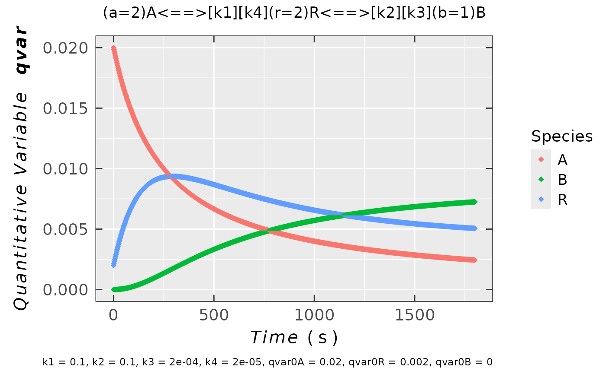
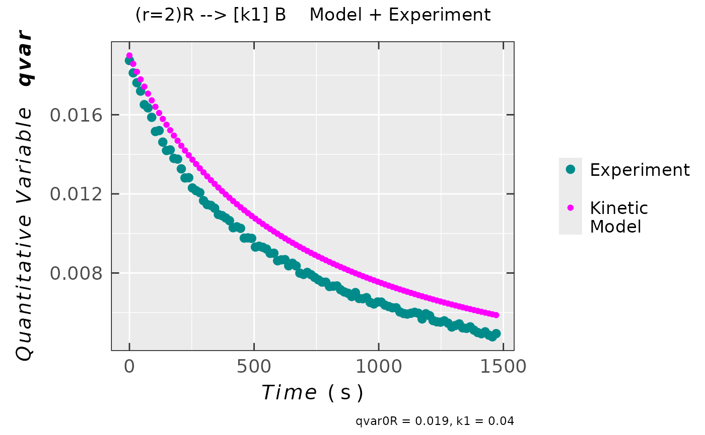
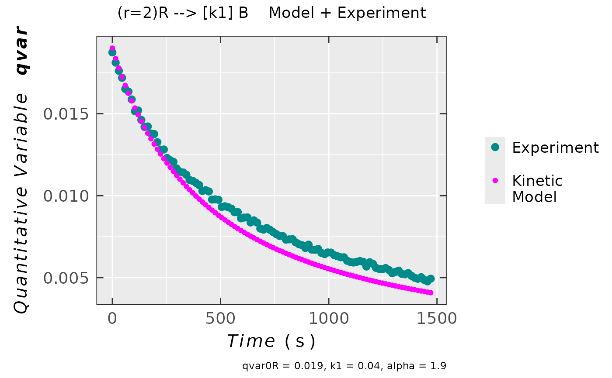

Quantitative EPR Kinetic Model Profiles by Numeric Solution of the ODE.
Source:R/eval_kinR_ODE_model.R
eval_kinR_ODE_model.RdTheoretical quantitative kinetic profiles (such as concentration/amount/integral intensity) as well as comparison with the experimental data for various predefined model reactions involving radical(s) (labeled as "R"). Profiles are evaluated by the numeric solution of rate equations by the Ordinary Differential Equations (ODE from desolve R package). This function is inspired by the R-bloggers article.
Arguments
- model.react
Character string, denoting a specific radical (
"R") reaction related to changes in integral intensities (or any other quantitative variable) in EPR spectral time series. Arrow shows direction of the reaction ("-->", forwardor"<==>", forward + reverse). Rate constants are indicated by square brackets after the arrows. Following examples of the reaction schemes are predefined and commonly used to describe the integral intensity and/or radical concentration/amount changes during the EPR time series experiment (ther,a,bstoichiometric coefficients may vary, see below).Reaction Scheme model.react \((r=1)\text{R} \xrightarrow{k_1} \text{B}\) "(r=1)R --> [k1] B"\((a=2)\text{A} \xrightarrow{k_1} (r=2)\text{R}\) "(a=2)A --> [k1] (r=2)R"\((a=2)\text{A} \xrightleftharpoons[k_4]{k_1} (r=2)\text{R} \xrightleftharpoons[k_3]{k_2} (b=1)\text{B}\) "(a=2)A <==> [k1] [k4] (r=2)R <==> [k2] [k3] (b=1)B"\((r=1)\text{R} \xrightleftharpoons[k_2]{k_1} (b=1)\text{B}\) "(r=1)R <==> [k1] [k2] (b=1)B"\((a=2)\text{A} \xrightleftharpoons[k_2]{k_1} (r=2)\text{R}\) "(a=2)A <==> [k1] [k2] (r=2)R"\((a=1)\text{A} + (b=1)\text{B} \xrightarrow{k_1} (r=1)\text{R}\) "(a=1)A + (b=1)B --> [k1] (r=1)R"\((a=1)\text{A} + (r=1)\text{R} \xrightarrow{k_1} \text{B}\) "(a=1)A + (r=1)R --> [k1] B"Couple of examples are also given in
Details. The function is relatively flexible and enables later addition of any other reaction schemes describing the EPR time series experiments (YOU MAY ASK DEVELOPER(S) via forum/help-channels). The stoichiometric coefficient (such as(r=1)or(a=1)) can be varied within themodel.reactcharacter string. Defined/Allowed values are integers e.g. 1,2,3...etc. The space character within themodel.reactstring is not fixed and can be skipped for the sake of simplicity. Ifelementary.react = FALSE(the model reaction is not considered as an elementary one), a possible non-integer partial coefficients (e.g.alpha,betaorgamma) must be included inkin.params(see alsokin.paramsdescription). For the consecutive model reaction presented above, it applies only to one part of the mechanism.- model.expr.diff
Logical, difference between the integral intensities/areas under the EPR spectra calculated using the experimental data and those generated by the model. By default the argument is FALSE and it is ONLY ACTIVATED (
model.expr.diff = TRUE) IN THE CASE WHEN THE KINETIC MODEL FITTING PROCEDURE (see alsoeval_kinR_EPR_modelFitor examples below) IS PERFORMED.- elementary.react
Logical, if the model reaction should be considered as the elementary one, i.e. the stoichiometric coefficients equal to the partial reaction orders. Such reaction proceeds without identifiable intermediate species forming. Default:
elementary.react = TRUE. Ifelementary.react = FALSE, i.e. themodel.reactcannot be considered like an elementary one, one must include the parameterized reaction orders \(\alpha\), \(\beta\) or \(\gamma\) in thekin.params, e.gkin.params = c(k1 = 0.01, qvar0A = 0.05, alpha = 1.5). For the consecutive model reaction presented above, it applies only to one part of the mechanism.- kin.params
Named numeric vector, containing rate constants as well as initial radical or other reactant/product concentration/integral intensities/areas...etc. Therefore, a general
qvar(quantitative variable) was defined which may actually reflect all above-mentioned quantities. Default:kin.params = c(k1 = 0.001,qvar0R = 0.02). The initial values are denoted asqvar0X(e.g. qvar0R for radical or qvar0A for the reactantA). The components ofkin.paramsdepend onmodel.reactas well as on theelementary.react. Ifelementary.react = FALSEadditional parameters like partial reaction orders (alphaand/orbetaand/orgamma) must be defined within thekin.params, like summarized in the following table:model.react Essential kin.params components "(r=1)R --> [k1] B"k1,qvar0R, (alpha)"(a=1)A --> [k1] (r=1)R"k1,qvar0A,qvar0R, (alpha)"(a=1)A <==> [k1] [k4] (r=1)R <==> [k2] [k3] (b=1)B"k1,k2,k3,k4,qvar0A,qvar0R,qvar0B, (alpha,beta,gamma)"(r=1)R <==> [k1] [k2] (b=1)B"k1,k2,qvar0R,qvar0B, (alpha,beta)"(a=1)A <==> [k1] [k2] (r=1)R"k1,k2,qvar0A,qvar0R, (alpha,beta)"(a=1)A + (b=1)B --> [k1] (r=1)R"k1,qvar0A,qvar0B,qvar0R, (alpha,beta)"(a=1)A + (r=1)R --> [k1] B"k1,qvar0A,qvar0R, (alpha,beta)- time.unit
Character string, corresponding to time unit like
"s"(default),"min"or"h".- time.Interval.model
Numeric vector, including two values: starting and final time/termination of the model reaction (e.g.
c(0,1800)in seconds, default).- time.Frame.model
Numeric value, corresponding to interval time resolution, i.e. the smallest time difference between two consecutive points. The number of points is thus defined by the
time.Interval.modelargument: $$((Interval[2] - Interval[1])\,/\,Frame) + 1$$ This argument is required to numerically solve the kinetic differential equations by theode. For the default interval mentioned above, the default value readstime.Frame.model = 2(in seconds).- data.qt.expr
A data frame object, containing the concentrations/integral intensities/areas under the EPR spectra calculated using the experimental data as well as time column. These two essential column headers are described by the character strings like those below
time.exprandqvar.expr. Thedata.qt.exprMUST BE USED ONLY IN SUCH CASE WHEN THE EXPERIMENTAL TIME HAS TO BE INCLUDED IN THE KINETIC MODEL (e.g. also for THE FITTING of EXPERIMENTAL DATA BY THE KINETIC MODEL). Default:data.qt.expr = NULL.- time.expr
Character string, pointing to
timecolumn/variable name in the originaldata.qt.exprdata frame. Default:time.expr = NULL(when the experimental data aren't taken into account). If the time has to be corrected (e.g. in the case of double integrals), please usecorrect_time_Exp_Specsfunction prior to kinetic evaluation.- qvar.expr
Character string, pointing to
qvarcolumn/variable name in the originaldata.qt.exprdata frame. Default:qvar.expr = NULL(when the experimental data aren't taken into account).- ...
additional arguments passed to the ODE (see also
ode).
Value
If the function is not used for fitting of the experimental and processed data,
the result is list consisting of:
- df
Data frame containing
timecolumn andqvar, quantitative variable, columns corresponding to quantities of different relevant species denoted as"R","A","B"+ ifdata.qt.expris NOT NULL additional experimental quantitative variable is present.- plot
Plot object containing
timeas \(x\)-axis andqvar(seedfabove) as \(y\)-axis + ifdata.qt.expris NOT NULL the experimental quantitative variable is presented as well.
Applying function for the fitting procedure
requires model.expr.diff = TRUE and therefore the result is represented by difference between
the integral intensities/areas, calculated using the experimental data
and those generated by the model.
Details
According to IUPAC (2019), see References, the rate of a chemical reaction
with the radicals (\(\text{R}\)) involved (example see argument model.react)
$$a\text{A} + r\text{R} \xrightarrow\, b\text{B}$$
is expressed via time change of extent of the reaction (\(\text{d}\xi/\text{d}t\)):
$$-(1/r)\,(\text{d}n_{\text{R}}/\text{d}t) = -(1/a)\,(\text{d}n_{\text{A}}/\text{d}t) =
(1/b)\,(\text{d}n_{\text{B}}/\text{d}t)$$
where \(a,r,b\) are the stoichiometric coefficients. At constant volume (\(V\)) conditions
(or if volume changes are negligible) the amount (\(n\) in mole) of reactant/product
can be replaced by its corresponding concentration (\(c = n/V\)). Such reaction rate
(expressed in moles per unit volume and per second) is function of temperature (\(T\)),
pressure (\(p\)) as well as that of concentration of reactants/products.
For the reaction example shown above it applies (for radical \(\text{R}\)):
$$\text{d}c_{\text{R}}/\text{d}t = - r\,k(T,p)\,c_{\text{A}}^{\alpha}\,c_{\text{R}}^{\beta}$$
This is called rate law, where \(k\) is the rate constant and its pressure dependence is usually
small and therefore can be ignored, in the first approach. Coefficients \(\alpha\) and \(\beta\),
in general, correspond to fitting parameters, coming from experimental relation of the reaction
rate and the concentration of reactants/products. These coefficients are called partial reaction orders
or PROs and their sum represents total order of the reaction. If the kinetic equation
for the reaction corresponds to its stoichiometry, the reaction is described as the elementary
one. In EPR Spectroscopy the number of radicals is directly proportional to (double) integral
of the radical EPR spectrum (see also quantify_EPR_Abs). Therefore, one can obtain
the rate constant from the rate law fit onto the experimental EPR spectral time series outputs, i.e. integral
intensity (area under the spectral curve) of radical ("R") formation and/or decay (see also
eval_kinR_EPR_modelFit). Quantitative kinetic profiles (such as that
\(\text{d}c_{\text{R}}/\text{d}t\) described above) are not evaluated
by integration of the kinetic equations/rate laws. However, by numeric solution of the Ordinary
Differential Equations, ODE in {desolve} R package.
Therefore, higher number of models is available than for integrated
differential equations because for complex mechanisms it's quite often highly demanding to obtain
the analytical solution by integration. Several kinetic models for radical reactions in EPR spectroscopy
are predefined and summarized below (see also model.react function argument).
| model.react | Short Description |
"(r=1)R --> [k1] B" | Basic forward reaction,
e.g. irrev. dimerization (if (r=2)). |
"(a=1)A --> [k1] (r=1)R" | Basic forward radical formation |
"(a=1)A <==> [k1] [k4] (r=1)R <==> [k2] [k3] (b=1)B" | Consecutive reactions,
e.g. considering comproportionation (for (a=2) and (r=2)) + follow-up reversible
dimerization ((b=1)). |
"(r=1)R <==> [k1] [k2] (b=1)B" | Basic reversible radical quenching,
e.g. rev. \(\pi-\pi\) dimerization for (r=2) and (b=1). |
"(a=1)A <==> [k1] [k2] (r=1)R" | Basic reversible radical formation,
e.g. from rev. comproportionation of conjugated thiophene oligomers
(\(\text{A}^{++} + \text{A}^0 \xrightleftharpoons ~ 2\text{R}^{.+}\), for (a=2) and (r=2)). |
"(a=1)A + (b=1)B --> [k1] (r=1)R" | Radical formation by chemical reaction like oxidation,
reduction or spin trapping (if A refers to transient radical, which is not visible within
the common EPR time scale). |
"(a=1)A + (r=1)R --> [k1] B" | General radical quenching by chemical reaction. |
References
International Union of Pure and Applied Chemistry (IUPAC) (2019). “Rate of Reaction”, https://goldbook.iupac.org/terms/view/R05156.
Quisenberry KT, Tellinghuisen J (2006). “Textbook Deficiencies: Ambiguities in Chemical Kinetics Rates and Rate Constants.” J. Chem. Educ., 83(3), 510, https://doi.org/10.1021/ed083p510.
Levine IN (2009). Physical Chemistry, 6th edition. McGraw-Hill, ISBN 978-0-072-53862-5, https://books.google.cz/books/about/Physical_Chemistry.html?id=L5juAAAAMAAJ&redir_esc=y.
rdabbler (2013). “Learning R: Parameter Fitting for Models Involving Differential Equations”, https://www.r-bloggers.com/2013/06/learning-r-parameter-fitting-for-models-involving-differential-equations/.
See also
Other Evaluations and Quantification:
eval_integ_EPR_Spec(),
eval_kinR_EPR_modelFit(),
quantify_EPR_Abs(),
quantify_EPR_Norm_const()
Examples
## irreversible dimerization quantitative kinetic profile
## table (df) with first 10 observations/rows
kin.test.01 <-
eval_kinR_ODE_model(model.react = "(r=2)R --> [k1] B",
kin.params = c(k1 = 0.012,
qvar0R = 0.08))
## preview
head(kin.test.01$df,n = 10)
#> time R
#> 1 0 0.080000000
#> 2 2 0.079693973
#> 3 4 0.079390278
#> 4 6 0.079088889
#> 5 8 0.078789783
#> 6 10 0.078492930
#> 7 12 0.078198306
#> 8 14 0.077905884
#> 9 16 0.077615642
#> 10 18 0.077327554
#
## consecutive reactions and the corresponding plot
## (`model.react` character string without spaces)
kin.test.02 <-
eval_kinR_ODE_model(
model.react = "(a=2)A<==>[k1][k4](r=2)R<==>[k2][k3](b=1)B",
kin.params = c(k1 = 0.1,
k2 = 0.1,
k3 = 2e-4,
k4 = 2e-5,
qvar0A = 0.02,
qvar0R = 0.002,
qvar0B = 0)
)
## plot preview
kin.test.02$plot

#
## data frame/table preview
head(kin.test.02$df)
#> time A R B
#> 1 0 0.020000000 0.0020000000 0.0000000e+00
#> 2 2 0.019841265 0.0021570046 8.6509396e-07
#> 3 4 0.019685030 0.0023112417 1.8639989e-06
#> 4 6 0.019531237 0.0024627557 3.0037259e-06
#> 5 8 0.019379835 0.0026115850 4.2900127e-06
#> 6 10 0.019230760 0.0027577797 5.7300903e-06
#
## loading example data (incl. `Area` and `time` variables)
## from Xenon: decay of a triarylamine radical cation
## after its generation by electrochemical oxidation
triaryl_radCat_path <-
load_data_example(file = "Triarylamine_radCat_decay_a.txt")
## corresponding data (double integrated
## EPR spectrum = `Area` vs `time`)
triaryl_radCat_data <-
readEPR_Exp_Specs(triaryl_radCat_path,
header = TRUE,
fill = TRUE,
select = c(3,7),
col.names = c("time_s","Area"),
x.unit = "s",
x.id = 1,
Intensity.id = 2,
qValue = 1700,
data.structure = "others") %>%
na.omit()
## data preview
head(triaryl_radCat_data)
#> time_s Area
#> <num> <num>
#> 1: 0.00 0.018741176
#> 2: 15.17 0.018117647
#> 3: 30.01 0.017617647
#> 4: 44.82 0.017194118
#> 5: 59.66 0.016511765
#> 6: 74.52 0.016347059
#
## comparison of the kinetic model with the experimental
## data `triaryl_radCat_data`, kinetic parameters were estimated
## to be as close as possible to the latter.
compar_model_expr_data_01 <-
eval_kinR_ODE_model(model.react = "(r=2)R --> [k1] B",
kin.params = c(qvar0R = 0.019,
k1 = 0.04),
time.Interval.model = c(0,1500),
data.qt.expr = triaryl_radCat_data,
qvar.expr = "Area",
time.expr = "time_s")
## plot preview
compar_model_expr_data_01$plot

#
## previous kinetic model with partial reaction
## order ("alpha") corresponding to "R" (radical species).
## In such case REACTION is NOT CONSIDERED
## as an ELEMENTARY one !
compar_model_expr_data_02 <-
eval_kinR_ODE_model(model.react = "(r=2)R --> [k1] B",
elementary.react = FALSE,
kin.params = c(qvar0R = 0.019,
k1 = 0.04,
alpha = 1.9
),
time.Interval.model = c(0,1500),
data.qt.expr = triaryl_radCat_data,
qvar.expr = "Area",
time.expr = "time_s")
## plot preview
compar_model_expr_data_02$plot
